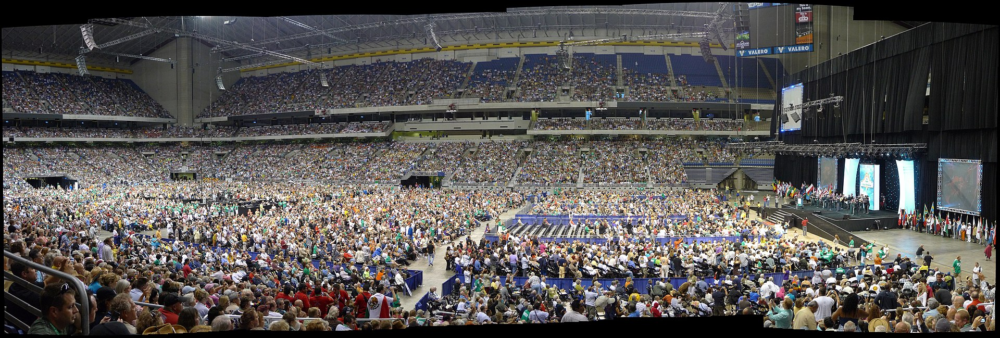
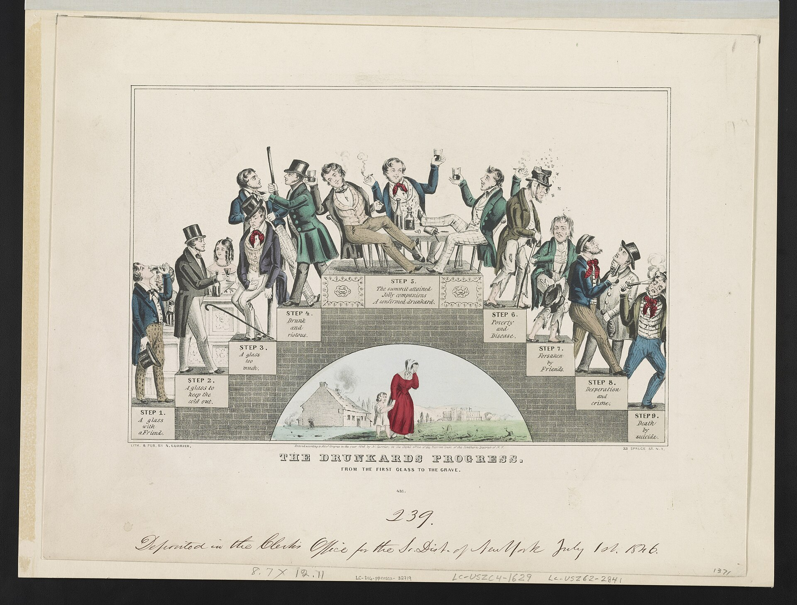
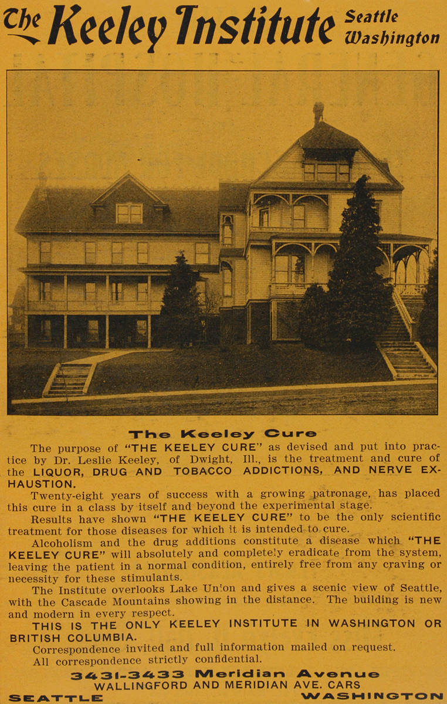
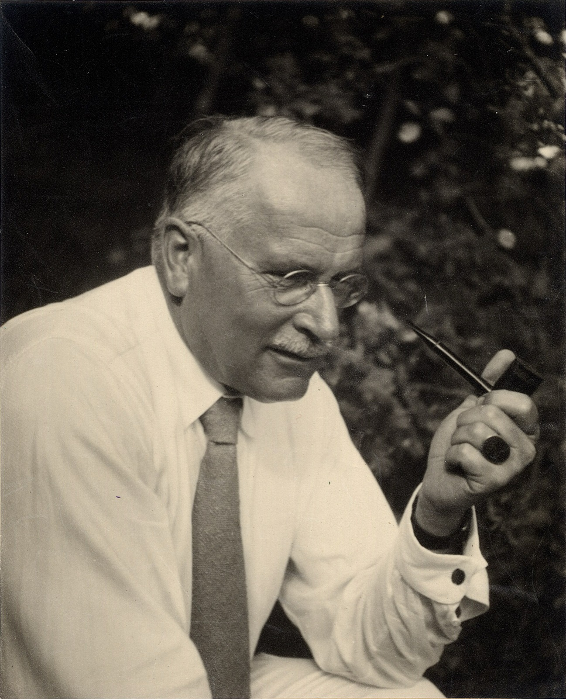
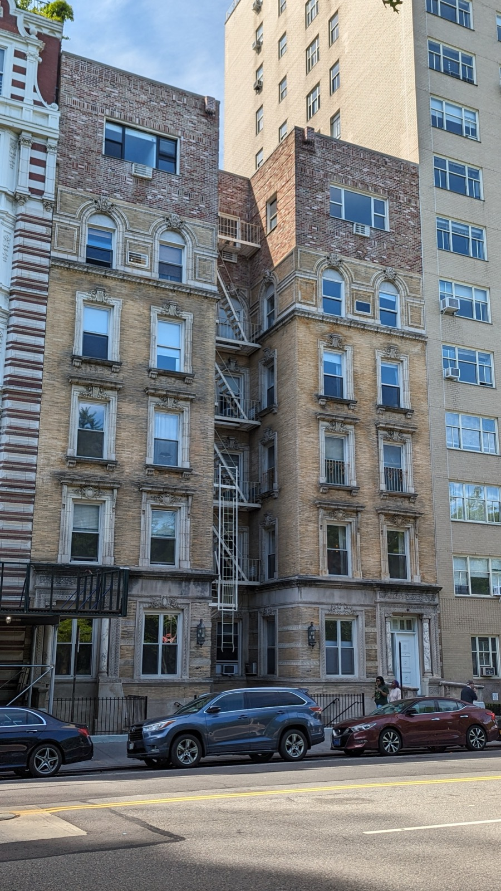
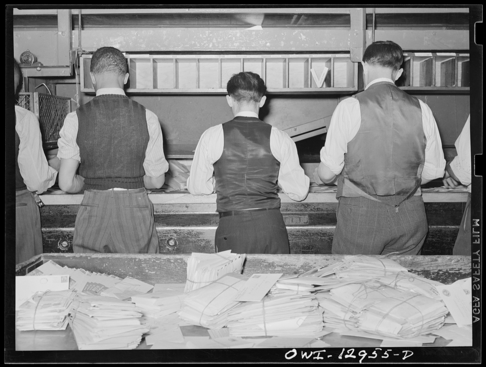
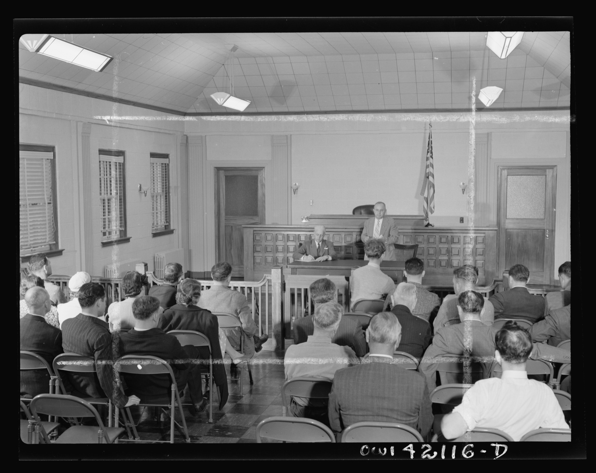
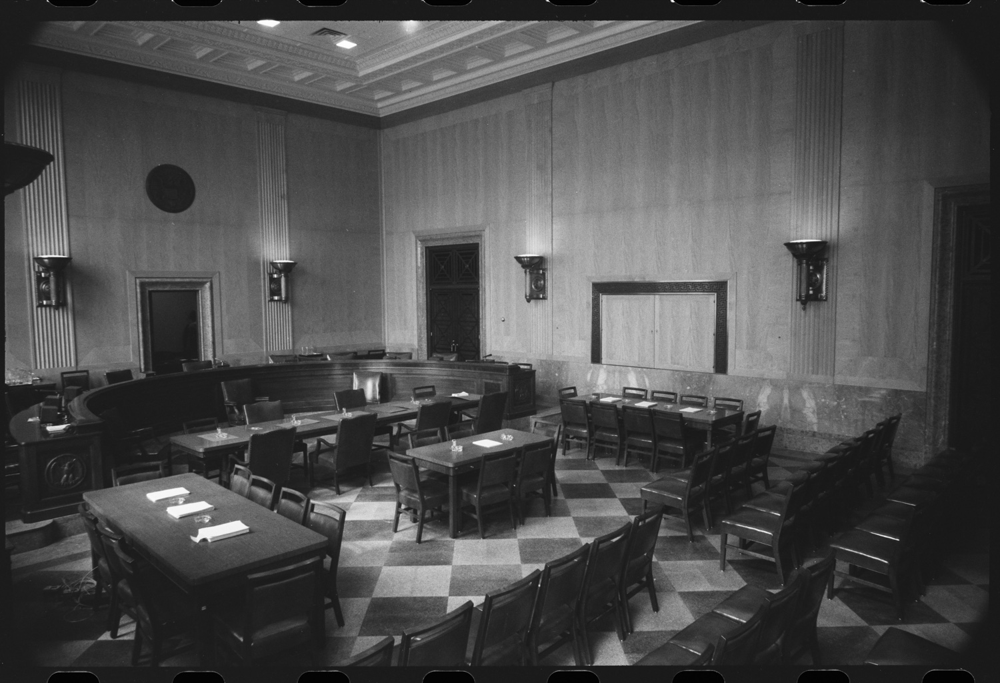
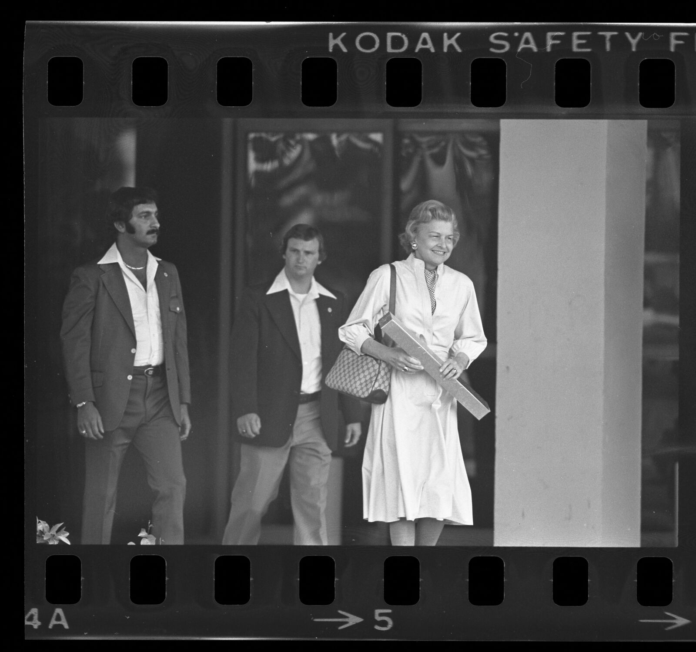
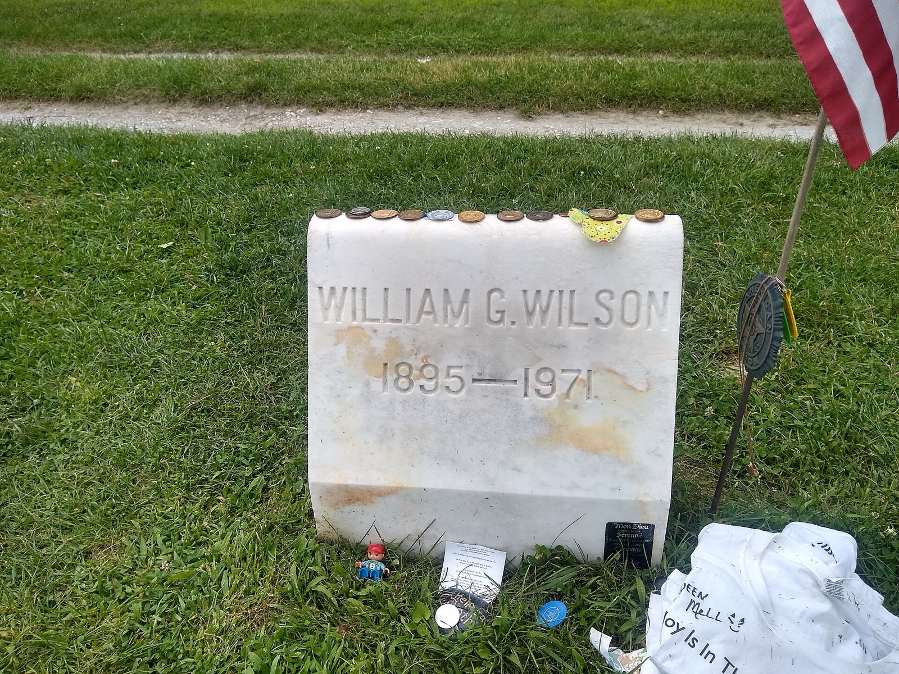

The scale
The most copied idea you never think about
Somewhere near you tonight, a group of strangers will sit in a circle of folding chairs, drink bad coffee, and try to keep each other alive. They are running a piece of software written in 1939, and it is everywhere.
Alcoholics Anonymous has somewhere around two million members in more than 180 countries. Nobody knows the exact number, because there are no rolls and no dues and you join by saying you have joined. The Twelve Steps it invented have been bolted onto almost everything: narcotics, gambling, food, debt, sex, cocaine, the families of all of the above. More than fifty separate fellowships now run on the same engine.

Opening ceremony, 2010 International Convention by Tony Kent, CC BY-SA 2.0, via Wikimedia Commons.
.jpg){kind=link}
The part that should not be true is that it works. People spent eighty years calling it a cult, or a placebo, or a religion in a trench coat. Then a 2020 review of 27 studies and more than 10,000 people found that a structured push into AA beats standard therapy at keeping people sober, and does it for free. One of the authors, a Stanford professor, called it the closest thing to a free lunch in health care. Cochrane 2020 More on that later, because the road to it is wild.
And it was built by two men who could barely stand up.
The largest, most studied, most imitated answer to addiction on the planet started with a hallucination and a single bottle of beer.
Every piece of that sentence is true, and the rest of this earns it. The good, the bad, and the strange, sorted by what makes you stop, not by what happened first.
The vacuum
Before it, drunks got a gold cure with no gold
For most of American history, a hopeless drunk had almost nowhere to go, and what little there was ranged from useless to a scam. AA landed the way it did partly because it landed in a hole.

The Drunkard's Progress, N. Currier, 1846. Library of Congress, public domain.
{kind=link}
The most successful one was a fraud with a great pitch. From 1879, Dr. Leslie Keeley sold the Double Chloride of Gold Cure, a tonic and a series of shots he promised would end the craving, and he franchised it. At its peak there were more than a hundred Keeley Institutes, and by some counts around 400,000 people took the cure. Keeley Chemists later tested the tonic. It contained no gold at all, and was about 27 percent alcohol. People were being treated for drinking with a stiff drink.

Keeley Institute advertisement, Seattle, 1909. University of Washington Libraries, public domain.
_(ADVERT_207).jpeg){kind=link}
There had been one real glimpse of what worked, and it had already come and gone. In the 1840s a group of reformed drunkards in Baltimore called the Washingtonians did the thing AA would later be famous for: they met, they told their stories, and they kept each other sober by sheer mutual attention. It spread like a brush fire and claimed hundreds of thousands of pledges. Then, within about a decade, it fell apart, torn up by politics, religious fights, and having no real program underneath the meetings. Washingtonians
AA's founders knew this story cold, and it scared them. The hard rules they later wrote, no opinions on outside issues, no leaders, no money beyond what the hat brings in, were built specifically so AA would not die the way the Washingtonians had. They designed the thing around the autopsy of the last thing.
Then Prohibition came, failed, and was repealed in 1933, and the few drying-out hospitals that remained were grim. When two desperate men met in 1935, there was almost nothing standing in the field. That emptiness is half of why the thing they built took root.
The chain
It came down a chain of five people
You can trace the whole movement back through a short chain of individual people, one telling the next, like a fuse burning toward Akron. That is the strangest fact about the founding, and it holds up.
It starts in Switzerland. In the 1920s a wealthy American alcoholic named Rowland Hazard went to the famous psychiatrist Carl Jung. After a long course of treatment that failed, Jung told him the truth: medicine could do nothing more for him, and his only hope was a vital spiritual experience, the kind that remakes a person from the inside. Jung Decades later, Jung and AA's founder closed a letter to each other with a Latin pun: spiritus contra spiritum, spirit against spirits, the medicine against the bottle.

Carl Jung, ca. 1935. ETH-Bibliothek Zürich, Bildarchiv, public domain.
Rowland carried that idea into a Christian movement called the Oxford Group, popular at the time, built on confession, making amends, and surrendering your will to God. He then carried it to an old drinking friend named Ebby Thacher, who was about to be locked up and got saved instead. Ebby, newly sober, carried it to his old drinking friend: a failing New York stockbroker named Bill Wilson.
Bill was drying out in Towns Hospital in Manhattan in December 1934, on a since-abandoned treatment that included belladonna, a plant that can cause hallucinations. At his lowest he cried out for God to show himself, and the room, he said, filled with white light and a feeling of total peace. His doctor, William Silkworth, did not call it madness. He told Bill that something had happened he did not understand, and that Bill had better hang on to it. Bill W.
Was it God or was it the belladonna? People have argued ever since, and from here you cannot separate the two. The critic Lance Dodes reads it as a drug reaction. The believers note that the calm lasted the rest of Bill's life. This piece does not need to settle it. contested debated

The former Towns Hospital, Central Park West by Eden, Janine and Jim, CC BY 2.0, via Flickr.
Sober but shaky, Bill spent months trying to save other drunks and failing every time. The one thing he noticed: preaching at them did nothing, but he himself stayed sober as long as he kept trying. Then a business trip to Akron, Ohio collapsed and left him broke and tempted in a hotel lobby, a bar at one end and a wall of church phone numbers at the other. He chose the phones. He needed to talk to another drunk or he would drink.
The calls led him, through a local woman named Henrietta Seiberling, to a surgeon who could not stop drinking either: Dr. Bob Smith. Bob agreed to give the strange New Yorker fifteen minutes. They talked for six hours. aa.org
What worked, finally, was the thing that had failed as a sermon and succeeded as a confession: one drunk talking to another as an equal, neither one preaching. Dr. Bob took one more drink, a beer to steady his shaking hands before surgery, on a June morning in 1935. As far as anyone can tell, it was his last. AA dates its birth to that beer. history (The exact day is itself debated, which is somehow perfect.)
Jung to Rowland to Ebby to Bill to Bob. Five people, and then it was no longer a chain. It was a fire.
The book
The book that had no business selling
The book members still call the Big Book got its nickname from cheap paper. In 1939 the little fellowship wrote it to spread the method and make a little money, then printed it on the thickest, cheapest stock the shop had, so a $3.50 book would feel fat enough to be worth it. Big Book The first run was 4,730 copies. It has now sold on the order of 40 million.
It nearly died in the crib. To move the first copies, the group ran a radio spot and mailed 20,000 postcards to doctors across the country. The flood of orders came back as exactly two. The next day, broke, the Wilsons faced eviction. Bill W.

Mail clerks and bundled letters, 1938. Arthur Rothstein, Farm Security Administration, Library of Congress, public domain.
The money story has one more twist that the program treats as a founding miracle. The oil heir John D. Rockefeller Jr. was approached for funding. He gave a little, but pointedly refused to give a lot, saying that real money would ruin the thing, would turn it from a fellowship into a business with salaries to protect. Rockefeller AA later decided he was right, and built poverty into its rules on purpose.
And here is the bit I admire most, the thing that keeps the cult accusation at arm's length. To this day AA declines outside donations, sells its own literature, and caps what any single member can give: only a few thousand dollars a year, and a modest one-time gift in a will. self-support A two-million-member global organization that returns your check if you are too generous is a genuinely strange and admirable thing.
The book did oversell itself, though. Its 1939 foreword announced more than one hundred men and women who had recovered from alcoholism. When the historian William Schaberg went back through the surviving membership records, the number who had actually quit drinking for good by the time the book shipped was closer to forty. Schaberg revised It was advertising a result it did not have yet. The result came later.
A book named for cheap paper, launched by a mailing that drew two orders, is now one of the best selling American books ever printed.
The good
It took eighty years to prove it works
For most of its life, the honest scientific verdict on AA was a shrug. The program is anonymous, voluntary, and spiritual, which makes it almost impossible to study the clean way you study a drug. In 2006 a major review looked at the evidence and concluded that no study had clearly shown AA worked better than anything else. Critics quoted that line for years. Cochrane 2006
Then the science caught up. Researchers stopped trying to study AA itself and studied something cleaner: what happens when a doctor actively walks a patient into AA, using a structured method called Twelve Step Facilitation. That you can run as a proper trial.

Men on folding chairs, town meeting, 1942. Fenno Jacobs, Office of War Information, Library of Congress, public domain.
In 2020 the Cochrane Collaboration, the most cautious name in evidence-based medicine, pulled together 27 studies covering more than 10,000 people. The finding was clear enough to surprise even the authors: structured Twelve Step Facilitation produced higher rates of continuous abstinence than other well-respected treatments like cognitive behavioral therapy, and kept doing it years out. Cochrane 2020 Because the meetings themselves are free, it also saved money. Hence the line about the free lunch.
The likely reason is not magic and not even mainly God. The researchers who dug into the mechanism, like John Kelly at Harvard, found AA mostly works by quietly swapping your social network, trading the friends you drank with for friends who do not, and by raising your confidence that you can cope sober. mechanism It is group therapy that never ends and never sends a bill.
While we are being truthful, let me kill a famous number. You have probably heard that AA has a 5 percent success rate, that 95 percent fail in the first year. That figure is a misreading of an internal survey chart from 1990, which tracked something else entirely. It was never a dropout rate, and the people who made the chart have said so. retention myth Real retention is messy, like all of addiction, but the scary number is simply not real.
The thing science could not measure for eighty years turns out, when you finally measure it right, to be one of the best deals in medicine.
The founder
The founder was a very strange man
The founder of the world's largest sobriety movement dropped acid, ran seances, and asked for whiskey on his deathbed. In the official story Bill Wilson is a saint in a suit. The real man stayed sober for 36 years and never stopped being a strange, searching, troubled person, and the program has been unusually honest about it, including in its own authorized biography.
Start with the drugs. In the 1950s, sober for two decades, Bill got fascinated with LSD. He took it for the first time in 1956 in Los Angeles, in a session guided by the writer Gerald Heard and arranged around the circle of the novelist Aldous Huxley. LSD He thought the drug might chemically reproduce the ego-collapse of his white-light night, and might crack open the hardest cases. The AA trustees were horrified that the founder of a sobriety movement was dropping acid, and he eventually stepped back.

Stepping Stones, Katonah, New York by Daniel Case, CC BY-SA 3.0, via Wikimedia Commons.
{kind=link}
Then the seances. For years Bill and his wife Lois held spiritualist sessions at home, with a ouija board and a small room they nicknamed the spook room, trying to contact the dead. He believed he was in touch with a long-dead figure he called Boniface. He also spent his last years campaigning for megadoses of niacin, a B vitamin, as a treatment for alcoholism, to the renewed alarm of the trustees. All of this is in the official biography, Pass It On, not dug up by enemies. Pass It On
There is a darker thread too, and the honest histories include it. By the accounts of biographers like Francis Hartigan and Susan Cheever, Bill had affairs, enough that friends reportedly kept a quiet watch to steer admiring women away from him at gatherings. biographies sourcing The man who taught millions to take a fearless moral inventory was not always able to live up to his own fourth step.
And the end is the most human detail of all. Bill Wilson died in January 1971 of the emphysema he earned from a lifetime of chain smoking. According to the nurse's log on his final flight, the founder of Alcoholics Anonymous asked for whiskey several times in his last days. He did not get it, and he died sober, on the very date that was his and Lois's wedding anniversary. Cheever
The man who built the machine could never quite stop searching, with acid, with vitamins, with the dead, for the next white light.
The hard part
Every court that looked called it religion
AA insists, carefully and constantly, that it is spiritual but not religious. You can pick your own higher power; an atheist and a believer can sit in the same room. That careful line holds up fine inside the meeting. It has not held up in court.
When American courts started forcing convicts and parolees to attend AA as a condition of their freedom, people who did not want a god in their sentence pushed back, and the judges kept agreeing with them. Federal court after federal court has ruled that ordering someone to attend AA violates the Establishment Clause, the part of the Constitution that bars the government from establishing religion. To rule that way, the courts looked closely at the program and concluded it is religious in character. Inouye v. Kemna

Empty Senate hearing room, 1959. Warren K. Leffler, U.S. News and World Report Collection, Library of Congress, public domain.
So there is the deep irony, stated plainly. A fellowship that swears it is not a religion has been ruled a religion by essentially every appeals court that has looked, while the comparative-religion scholars would tell you it has almost every feature of one: a conversion story, a confession, a core text, rituals, and a higher power. It is the rare thing that calls itself not-a-duck and keeps getting legally classified as a duck.
The critics go further, and they deserve a fair hearing. The psychiatrist Lance Dodes argues the real success rate is tiny and the whole disease framing is shaky. Dodes The journalist Gabrielle Glaser, in a widely read 2015 piece, argued that America funnels people into AA by default while ignoring medications that have better evidence in much of the world. Glaser, The Atlantic Both points are real. They sit, a little uncomfortably, right next to the 2020 evidence that the program does help a lot of people. Two true things at once.
It looks like a religion, the law treats it like a religion, and it still works for a lot of people who do not believe in any of it.
The offspring
It accidentally built an industry
AA itself owns no hospitals, employs no counselors, and takes no insurance money. But the idea it proved, that addicts could be treated in groups by other addicts, escaped into the world and built a multibillion-dollar industry that AA neither controls nor profits from.
First came the copies. Narcotics Anonymous, Gamblers Anonymous, Overeaters Anonymous, Cocaine Anonymous, Al-Anon for the families, and dozens more, all running the Twelve Steps with the noun swapped out. Then came the professionals. In 1949 a Minnesota center called Hazelden married the steps to medical staff and a fixed 28-day stay, and that template, the Minnesota Model, became how America does rehab.

Betty Ford leaving Long Beach Naval Hospital, May 1978 by Michael Mally, Los Angeles Times Photographic Collection, UCLA Library Special Collections, CC BY 4.0.
It went mainstream in 1978 when Betty Ford, the sitting president's wife, told the country she was an addict, and then built the Betty Ford Center. Celebrity rehab became a cultural institution. Betty Ford
Not every branch was healthy. Synanon began in 1958 as a bold drug-rehab community spun off from AA, was praised for years, and then curdled into a violent cult under its founder; at its worst, members put a live rattlesnake in the mailbox of a lawyer who crossed it. Synanon And the fight over whether some drinkers can ever drink in moderation produced its own tragedy: Audrey Kishline, who founded a moderation-based group as an alternative to AA, announced she was giving up and switching to abstinence, and then, drunk, killed a man and his 12-year-old daughter in a head-on crash. Kishline Both sides of the abstinence argument still invoke her.
The most imitated idea in recovery is owned by no one, and it spawned both the Betty Ford Center and a rattlesnake in a mailbox.
The close
The name they left off the stone
The last surprising thing about AA is the one hiding in its name. The anonymity is not shyness. It is the load-bearing rule, and it was learned the hard way.
In 1940 a Cleveland baseball catcher named Rollie Hemsley, newly sober, was behind the plate for the only opening-day no-hitter in major league history, and then happily told the newspapers that AA had gotten him sober. Membership jumped, and the fellowship learned a lesson: tie the program to a famous name and you tie its reputation to whether that person stays sober. So they made anonymity a principle. Put the principles before the personalities, always. anonymity
Bill Wilson lived it to the end. He turned down an honorary degree from Yale and declined to appear, even with his face hidden, on the cover of Time, because being publicly the face of AA would break the rule he had written. Bill W. When he died, his obituary ran on the front page of the New York Times, and only then was his full name attached to the movement, by an arrangement he had agreed to in advance.

Bill Wilson's gravestone, East Dorset, Vermont by Whoisjohngalt, CC BY-SA 4.0, via Wikimedia Commons.
{kind=link}
Go to his grave in Vermont and you will find a plain stone. It gives his name and his dates. It does not mention Alcoholics Anonymous at all. The man who built the most famous recovery program on Earth kept his own name off it even in death.
And yet the top of the stone is always covered in sobriety chips and coins, left by people who drove a long way to thank a stranger they were never supposed to be able to name. That is the whole thing in one image. A program that hides every name, remembered by people who could not say theirs either, keeping each other alive in a circle of folding chairs tonight, somewhere near you.
You probably know someone in that circle. That is the last surprise. It is much closer than it looks.
The fine print
Sources, and what I was careful about
This is a tour, not a textbook, and it leans on the standard histories (Kurtz's Not-God, William White's Slaying the Dragon, Schaberg's Writing the Big Book) plus the official AA accounts, checked against the critics. A few load-bearing places are genuinely debated, and I flagged them in the text rather than smoothing them over: whether Bill Wilson's white-light experience was a spiritual event or a belladonna reaction; the exact founding date; and the gap between the Big Book's claim of "more than one hundred" recovered members and the roughly forty the archival rolls support. The 5 percent success figure is a debunked myth, and the section on the program working leans on the 2020 Cochrane review, with its 2006 predecessor and the strongest critics cited right alongside it.
The full list, twenty-nine sources, grouped by section
The scale, and the program
- Alcoholics Anonymous. Estimates of membership and groups; the Twelve Steps and Traditions. aa.org
- Kelly JF, Humphreys K, Ferri M (2020). Alcoholics Anonymous and other 12-step programs for alcohol use disorder. Cochrane Database Syst Rev. cochranelibrary.com
- Ferri M, Amato L, Davoli M (2006). The earlier review finding no clear advantage. Cochrane Database Syst Rev. cochranelibrary.com
- Recovery Research Institute (J. Kelly et al.). How AA works: social network change and self-efficacy. recoveryanswers.org
- Alcoholics Anonymous. Retention and the misread 1990 survey chart (the 5 percent myth). Wikipedia. wikipedia.org
The vacuum before it
- Keeley Institute. The Double Chloride of Gold Cure; franchises and scale; the tonic's real contents. Wikipedia. wikipedia.org
- Washingtonian movement. Reformed-drunkard meetings of the 1840s, rapid rise and collapse. Wikipedia. wikipedia.org
- White WL (1998). Slaying the Dragon. The full history of American addiction treatment, including the inebriate asylums and the cure era. williamwhitepapers.com
- Benjamin Rush. The 1784 Inquiry and the first American disease framing of habitual drunkenness. Wikipedia. wikipedia.org
The chain, and the founding
- Carl Jung. The treatment of Rowland Hazard and the verdict that only a spiritual experience could help; the 1961 letter. Wikipedia. wikipedia.org
- Bill W. (Wilson). Towns Hospital, the belladonna treatment, the white-light experience, Silkworth's response. Wikipedia. wikipedia.org
- Towns Hospital. The belladonna regimen; the contested reading of the white-light experience (Dodes vs. the traditional account). Wikipedia. wikipedia.org contested
- Oxford Group. Buchman's movement: confession, amends, surrender; AA's parent. Wikipedia. wikipedia.org
- Alcoholics Anonymous. The start and growth of A.A.: Akron, the Mayflower lobby, Dr. Bob, June 1935. aa.org
- History of Alcoholics Anonymous. The founding date debate and the early spread. Wikipedia. wikipedia.org date debated
The book and the money
- The Big Book (Alcoholics Anonymous). The 1939 first edition, the thick-paper nickname, sales over time. Wikipedia. wikipedia.org
- Schaberg WH (2019). Writing the Big Book: The Creation of A.A. Archival correction of the "more than one hundred" claim and the founding legends. writingthebigbook.com revises the official story
- Alcoholics Anonymous. The Seventh Tradition and self-support: declining outside money, the contribution cap. aa.org
- Kurtz E (1979). Not-God: A History of Alcoholics Anonymous. The standard scholarly history, including the Rockefeller decision. Hazelden. hazelden.org
The founder, in full
- Alcoholics Anonymous (1984). Pass It On. The authorized biography, frank about the LSD experiments, the spiritualism, and the depression. aa.org
- Bill Wilson and LSD. The 1956 sessions with Gerald Heard, the Huxley circle, the trustees' alarm. Wikipedia. wikipedia.org
- Hartigan F (2000). Bill W.: A Biography. The affairs and the informal watch kept at gatherings. macmillan.com sourcing varies
- Cheever S (2004). My Name Is Bill. The chain smoking, the emphysema, the deathbed accounts. simonandschuster.com
The hard part: is it religion
- Inouye v. Kemna (9th Cir. 2007). Coerced 12-step attendance violates the Establishment Clause; the program is religious for that purpose. Wikipedia. wikipedia.org
- Glaser G (2015). The Irrationality of Alcoholics Anonymous. The Atlantic. theatlantic.com
- Dodes L, Dodes Z (2014). The Sober Truth. The case that the success rate is small and the model is flawed. summary contested
The offspring
- Betty Ford Center; Hazelden Betty Ford. The 1978 disclosure, the 1982 center, the Minnesota Model. Wikipedia. wikipedia.org
- Synanon. The AA offshoot that became a cult; the rattlesnake left for attorney Paul Morantz, 1978. Wikipedia. wikipedia.org
- Moderation Management; Audrey Kishline. The moderation alternative and the 2000 crash that killed two people. Wikipedia. wikipedia.org